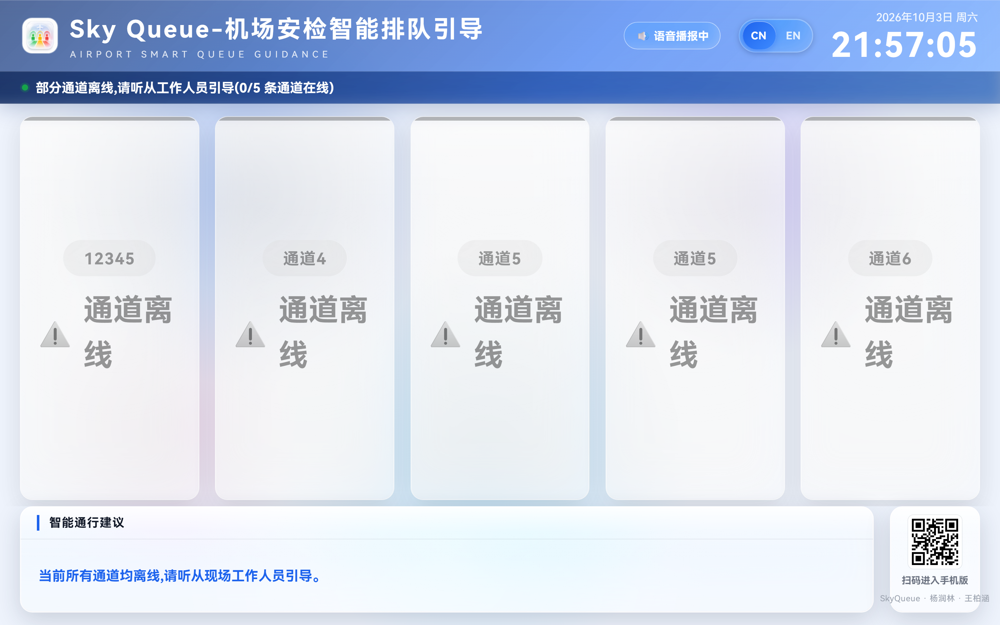
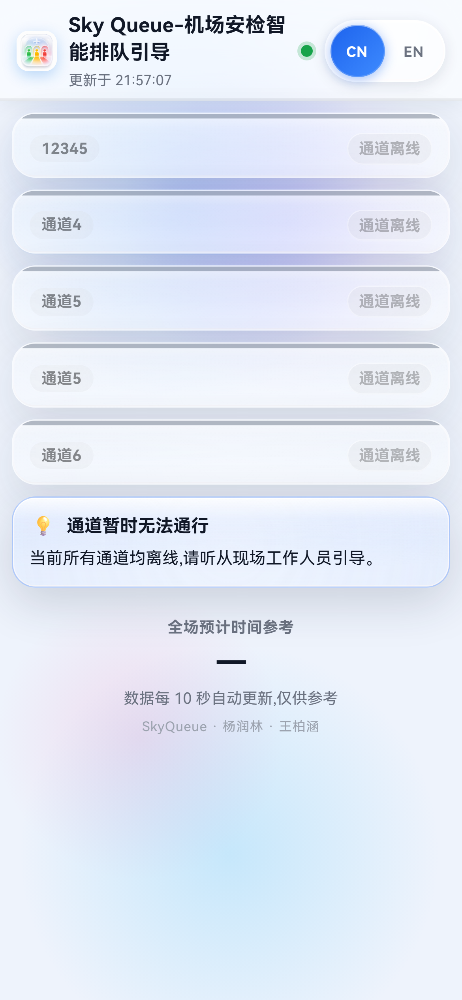
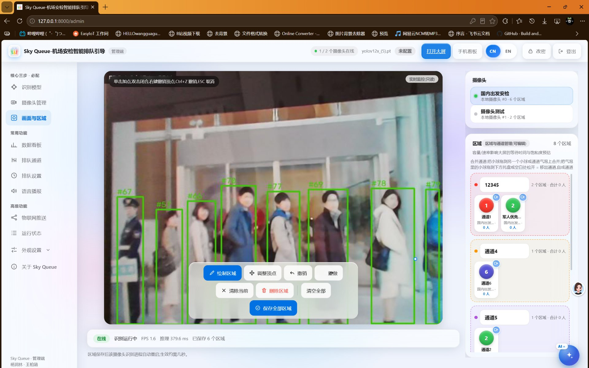
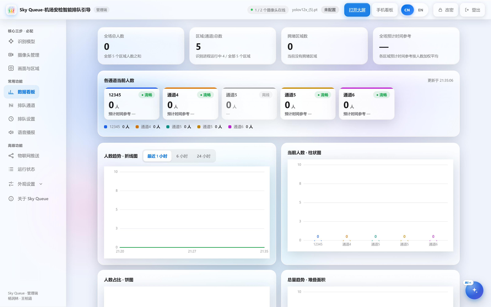
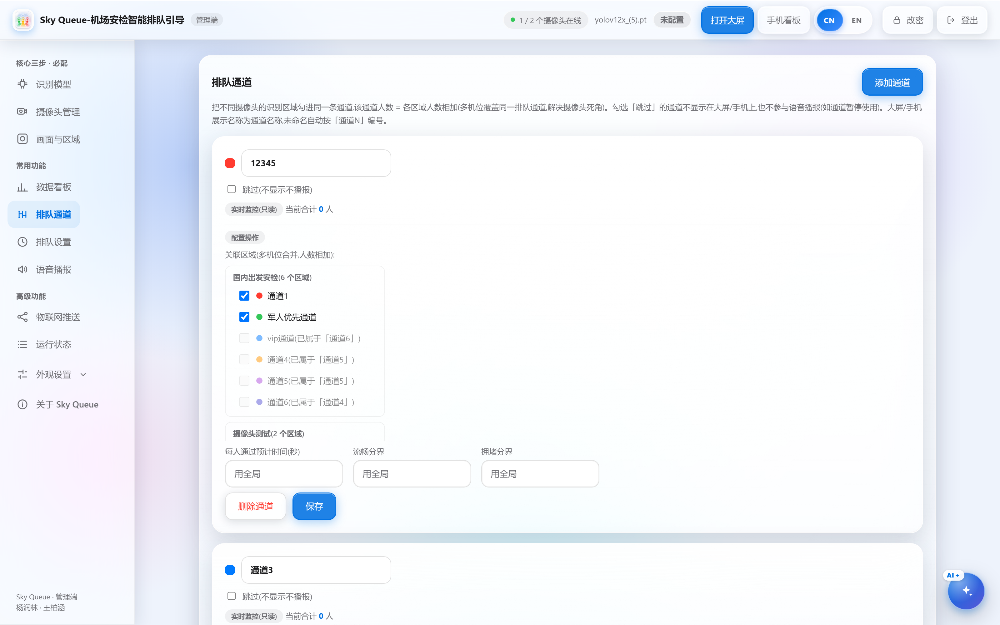
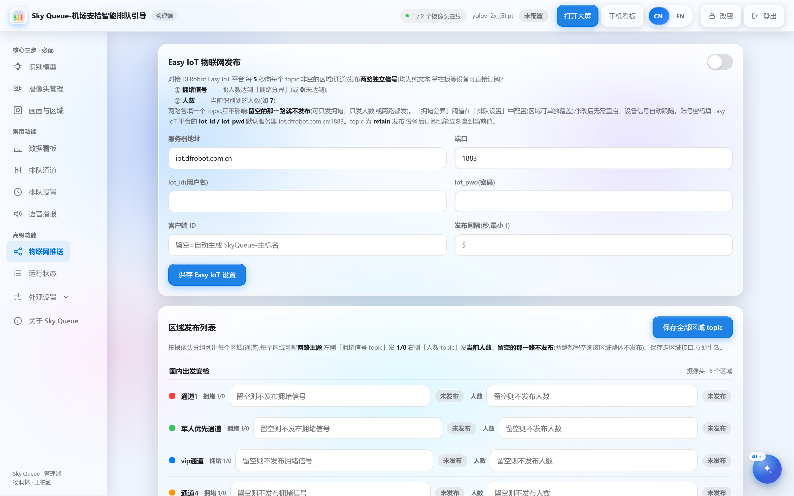

在机场安检口，常常是一条队伍排出几十米，旁边一条却寥寥数人。这并非管理方不想解决——真正的原因是，没有人知道每条通道实时的真实人数。
旅客选择通道，依据的只是「眼前能看到的队伍长度」。现实中队伍常因拐角、柱子、隔断而遮挡视线——个体的「就近最优」累积成了全局的「整体最差」。
管理员要靠来回巡场、肉眼观察才能发现拥堵，往往等队伍排乱才知道。排队系统里「看不见」的不只是旅客，还有真正有能力现场处置拥堵的人。
| 现有方案 | 感知方式 | 主要不足 |
|---|---|---|
| 人工巡查 + 喊话 | 人眼 | 滞后、不精确、费人力，给不出具体数字 |
| 排队叫号系统 | 取号记录 | 要专门硬件；只管取号顺序，看不到没取号的人 |
| 闸机 / 红外计数 | 通过事件 | 只统计「总共过了多少人」，数不出「现在排着多少人」 |
| 云端 AI 视频分析 | 视频传云端 | 有隐私风险；依赖网络，断网就失效；费用高 |
| 人群密度估计 | 密度图 | 难以按具体通道切分，普通电脑上难以实时运行 |
| Sky Queue（本项目） | 现场摄像头 + 本地 AI | 低成本、纯本地、实时、可分流 |
自下而上分为五层。每一路摄像头跑在独立进程中，模型在每进程各加载一份；MQTT 是所有硬件端共同的数据出口——一次识别，多端受益。
手机版、大屏版、管理端共用同一个状态中心，通过 WebSocket 长连接保持一致。管理员改配置，现场大屏和旅客手机秒级更新，不需要刷新页面。






以下七项是我们自己提出并实现的设计，每一项都针对一个真实存在的技术或体验问题。
常见做法是「检测框中心点落在哪个区域就算哪边」，但排队时人被前排挡住、检测框下沿外移，中心点会跑偏。我们按重叠面积归属，更符合「人站在哪条队伍里」，并保证一人最多计一次。
把「摄像头画面里的区域」和「旅客眼里的通道」分开。几个互有死角的机位可以拼成同一条通道、人数相加，不加任何硬件就能看全整条队伍。
分流建议不止显示在屏幕上。地面 WS2812 灯带用颜色（绿/黄/红）表示拥堵程度、跑马灯流动方向指路；通道口 8×8 点阵屏直接显示人数并用箭头引导——不看手机也能跟着走。
一块手表大小的 ESP32-C3 工牌。拥堵时红色闪烁并蜂鸣；按确认键只消音、红色标记保留到恢复畅通才熄灭。「发现拥堵」从「管理员去找屏幕」变成了「告警来找管理员」。
通道口贴一张写入 Wi-Fi 信息与网址的 NFC 标签，手机碰一下就自动连网并打开排队页面——比扫码更快，对拖着行李、不方便腾手的旅客特别友好。
人流快速变化时，推荐目标通道可能来回切换，反而让人无所适从。我们用播报最小间隔抑制这种抖动，并提出了进一步改进的思路。
工牌的姓名、岗位、部门都是用户随便填的，无法预知用字。我们生成了覆盖常见姓氏与取名用字的字体子集（2300 余字），点阵数据约 260KB 存放在 Flash 里按需直读、不占运行内存。
AI 失败自动回退公式；MQTT 连不上照常识别显示；推理设备 NPU→GPU→CPU 自动降级；工牌断网时保留最后数据并标注离线。任何一环出问题，系统整体仍然可用。
我们不用告诉它「这是机场」还是「那是医院」。只要重新配置摄像头与区域，同一套软件就能用在任何有排队的地方。
安检口、候车厅的通道分流，节假日高峰临时加开通道时快速配置。
挂号、缴费、取药窗口的候诊分流；语音播报可单独关闭以免扰民。
食堂、办事窗口、打印季的队列引导，成本远低于专用叫号系统。
收银台、热门展项的排队引导，节假日大客流场景同样适用。
我们把「视频不出本机」当作设计前提，而不是事后补丁——这既是隐私选择，也是可靠性和成本上的优势。
以下数据来自模拟场景与真实场景测试，记录于项目报告书。
从一次排队的不愉快经历出发，完整走了一遍「发现问题 — 调研分析 — 设计 — 制作 — 测试 — 迭代」。
系统架构 / 后端 / 三端互联
识别算法 / 嵌入式固件 / 物联网
本项目为团队自主研发，完整走过「发现问题 — 调研分析 — 方案设计 — 原型制作 — 实验测试 — 迭代优化」的完整流程。